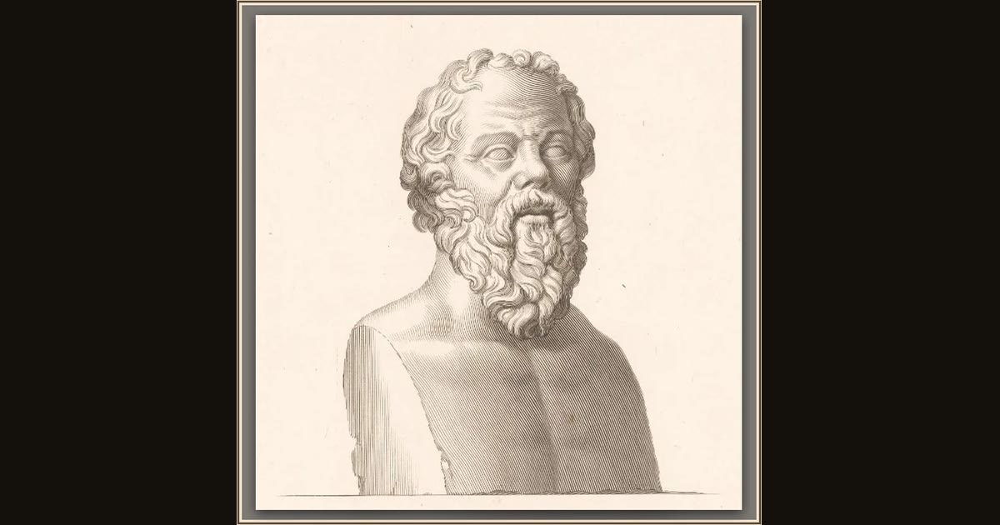

Antieke buste van Socrates
Etienne Baudet · 1677 · rijksmuseum
Baudet's engraving shows a bust identified as Socrates; Euthyphro addresses the philosopher by name as they meet by the king archon's portico. (2a) Explore its place in Plato's Dialogues, Euthyphro, section 1.